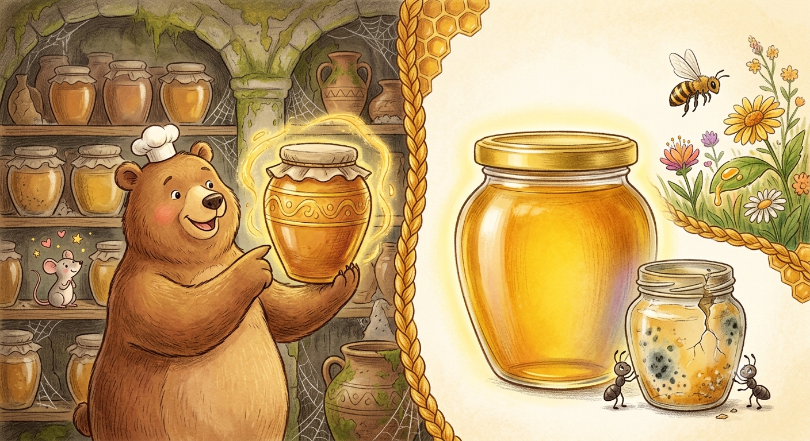
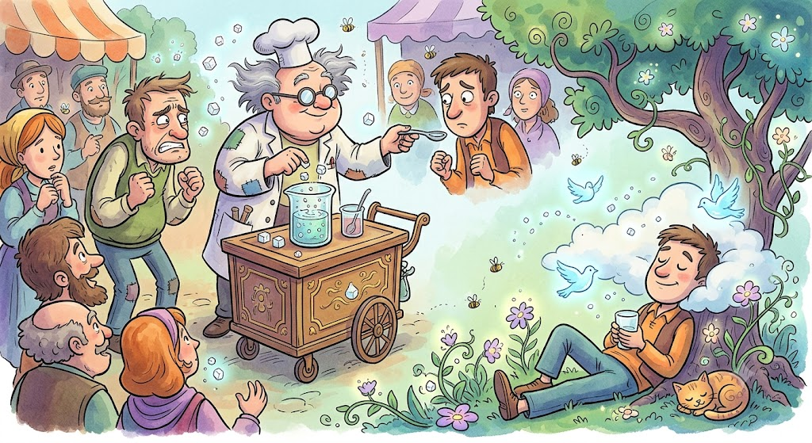
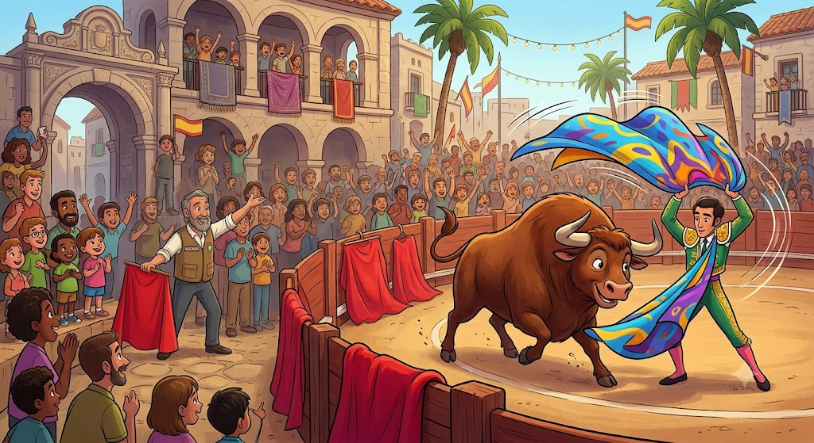

O mel é o único alimento que nunca estraga?.
Verdade! Por ter pouca água e ser ácido, bactérias não conseguem crescer nele.

Água com açúcar realmente acalma uma pessoa?.
Mito! O efeito é psicológico (placebo), pois o açúcar não tem propriedades sedativas.

A cor vermelha deixa os touros furiosos?.
Mito! Touros não enxergam o vermelho; eles atacam pelo movimento do pano do toureiro.